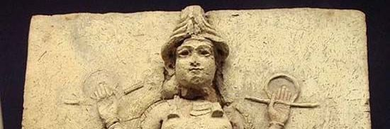

An Analysis of Ecclesiastes and Gilgamesh
A digital journey through the themes of death and futility
between the book of Ecclesiastes and the Epic of Gilgamesh.
1. Introduction into the Text
2. Major Themes
1. Introduction of the Text
2. Siduri's Wisdom vs. Ecclesiastes 9

In the Epic of Gilgamesh, Gilgamesh goes and seeks out Sinduri - a wise figure - for advice and wisdom on his fate. She tells Gilgamesh that only the gods live forever, and offers advice to embrace mortality in men and instead, enjoy himself in the days of his life. We can see the lines of text below:
You, Gilgames, let your belly be full,
keep enjoying yourself, day and night!
Every day make merry,
dance and play day and night!
Let your clothes be clean!
Let your head be washed, may you be bathed in water!
Gaze on the little one who holds your hand!
Let a wife enjoy your repeated embrace!
Such is the destiny [of mortal men,]
that one who lives [.....]
3. Death and the Futility of Life
In Ecclesiastes, we see the theme of death: that death is inevitable, the one event that every living thing ends up to, and happens across class and success. Thus, because we all succumb to death, what’s left of humans is to enjoy their toil while they are alive.
Secondly, we see “futility” (hevel, or fleeting like vapor): the inability of humans to make sense of the world around them. Humans tend to try to make a plan for lives, seek after rewards, and invest in pursuits. But the mindset of the good being rewarded and the wicked being punished doesn’t seem to work in this life, based on the wisdom of the preacher.